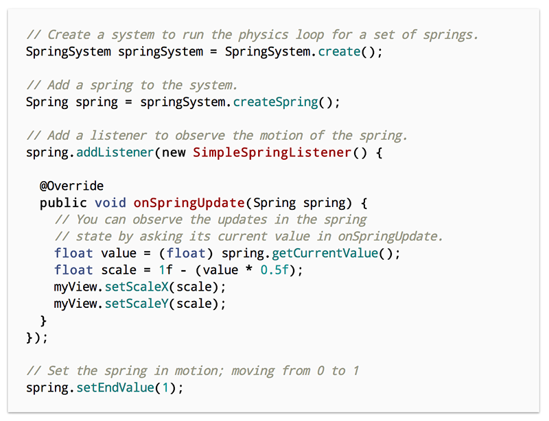

Rebound
What? Where? Why? How? When?
What is it?
Rebound is a simple library that models spring dynamics for the purpose of driving physical animations.
Simply: an API around Hooke's law
f = -kx
What it isn't...
A full physics engine
Opinionated about rendering
A full replacement for the built-in animation utilities
What can i do with it?
Where is it used?
Facebook product usages
Facebook Home
Messenger/Chat Heads
FB4A
Slingshot
Bolt
Rebound has quite a few external users as well
Jelly
Secret
Evernote
Skitch
Flow
Snapchat
Why did we build it?
These guys love springs...
Inspired by Paper and Home
Natural · Continuous · Interruptible
How do you use it?
Rebound Api
SpringSystem
Spring
Listeners
Utilities

Pro Tips
Look at how the design is implemented in QC/Origami.
Use a zero to one range interpolation for simple transitions and effects.
You can coordinate and synchronize multiple animations on a single Spring.
A spring with zero tension can provide inertial decaying coasting.
Use a spring to indirectly translate views in direct manipulation gestures.
When can I get started writing some cool animations?
Right now!
github.com/facebook/rebound
github.com/facebook/rebound-js
More examples for the Sandbox app are needed!
Thank you!